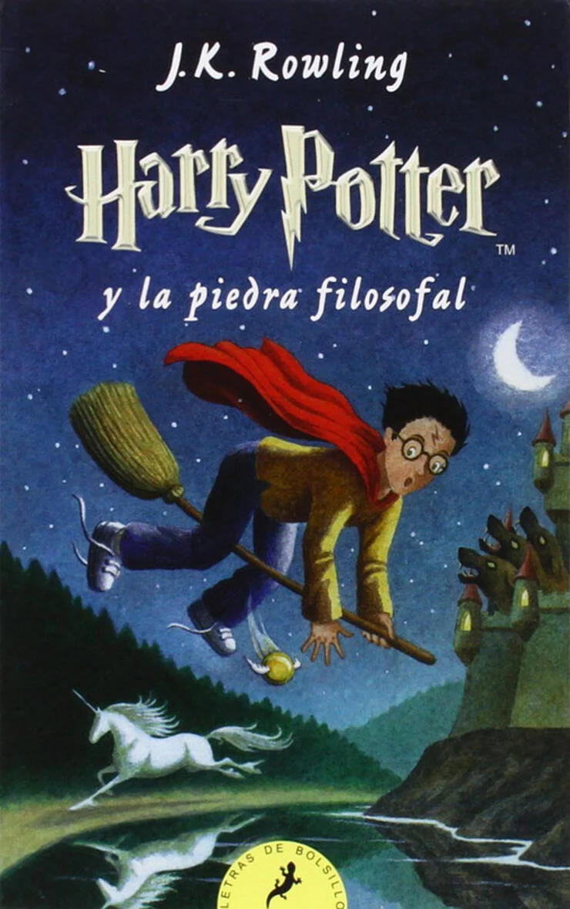
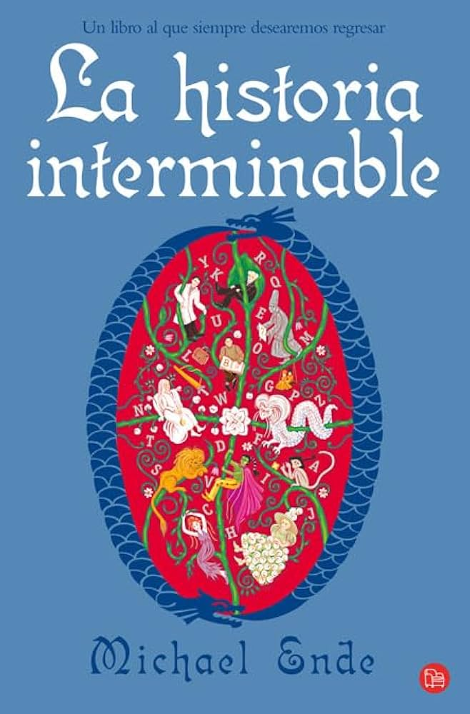

Mis libros recomendados
Aqui encontraras algunos de los libros que mas me han gustado
Cada uno tiene una pequeña descripción para que conozcas de qué trata.

El principito
Antoine de Saint-Exupéry
Un clásico que nos recuerda la importancia de la amistad y de ver más alla de las apariencias.
Mas informacion
Harry Potter y la piedra filosofal
J.K Rowling
El comienzo de una aventura llena de magia,amistad y grandes sorpresas
Mas informacion
historia interminable
Michael Ende
Un viaja fascinante a un mundo de fantasia donde la imaginación no tiene límites
Mas informacion